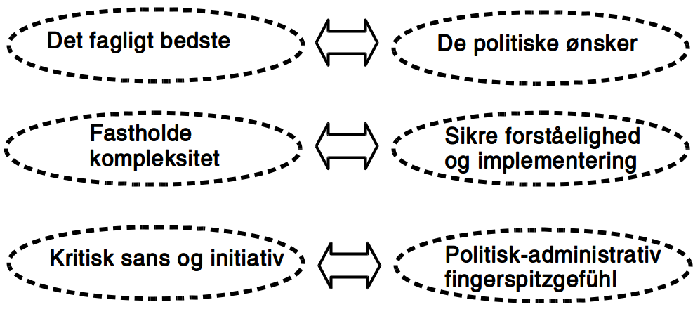

At arbejde og forske i en politisk ledet organisation
At iagttage en kommune
Administrativ iagttagelse
Kommunalpolitisk iagtagelse
Samfundsvidenskabelig iagttagelse
Dilemmaer i en politisk ledet organisation
